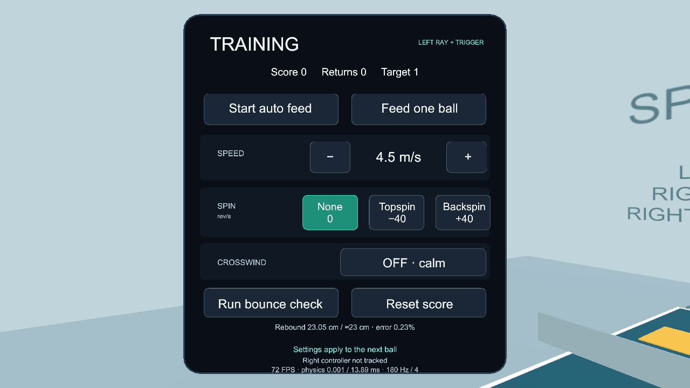
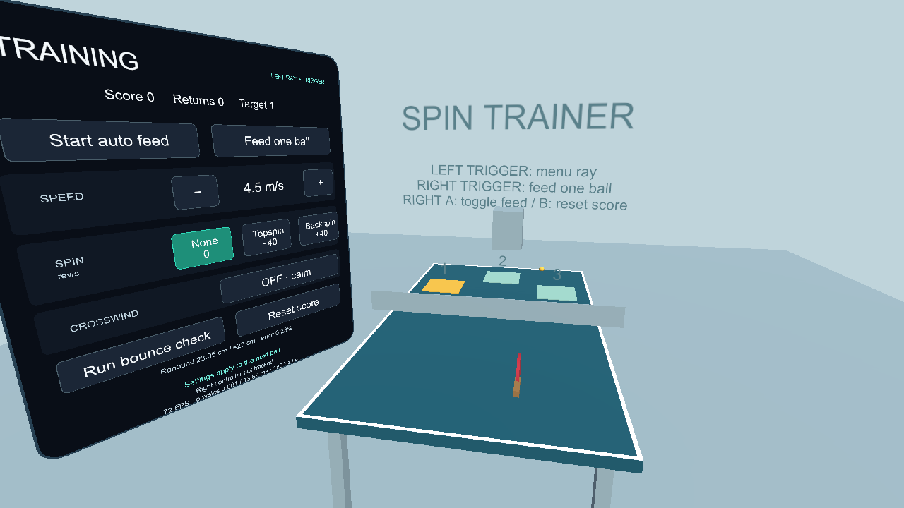

02 · UNITY / QUEST
Table-tennis
spin trainer.
This demo is a Unity project, as required by the professor. Open
Demo2_Trainer in Unity 6000.3.22f1, then choose
Portfolio → Prepare Trainer to generate the scene.
Choose Portfolio → Build Quest APK for Android ARM64,
IL2CPP, OpenXR and Meta Quest support.
This is not a WebXR browser demo. Install its APK on a Quest through
Meta Quest Developer Hub, SideQuest or
adb install -r demo2-v1.0.4.apk. On school-managed ArborXR
headsets, use permitted USB debugging or ask your professor/IT to deploy
the APK. Version 1.0.4 fixes the feed arc so new balls clear the net and
bounce on your half, confirmed by the student on the Quest 3. It
preserves the settings panel, startup and
paddle-grip fixes previously confirmed on the school Quest 3. Remaining
gameplay and sustained performance checks are still required.
Download Quest APK Release and installation notes
Left controller: point at a board button and press trigger. Right controller: swing the tracked paddle; trigger feeds one ball, A toggles repetition, B resets score.

